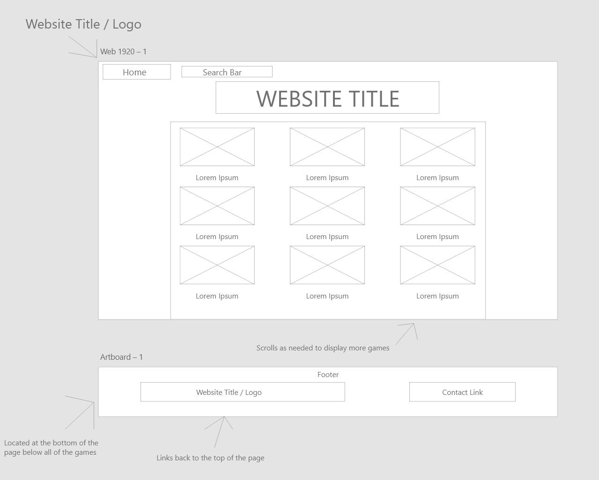
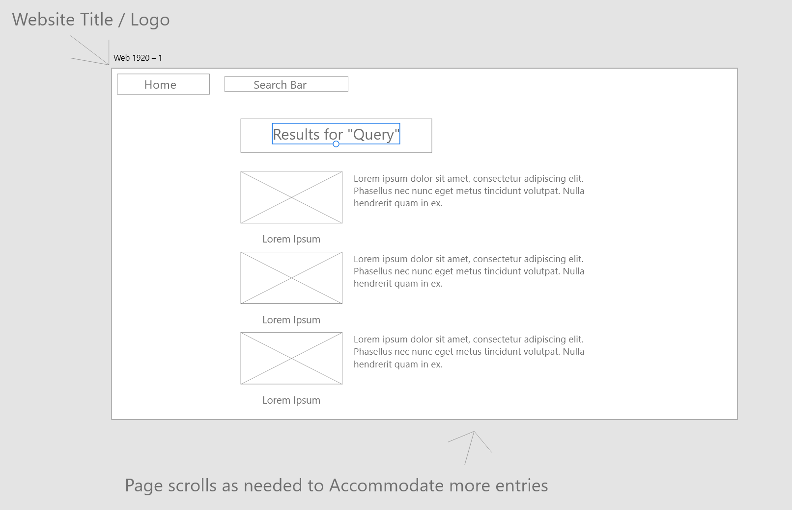
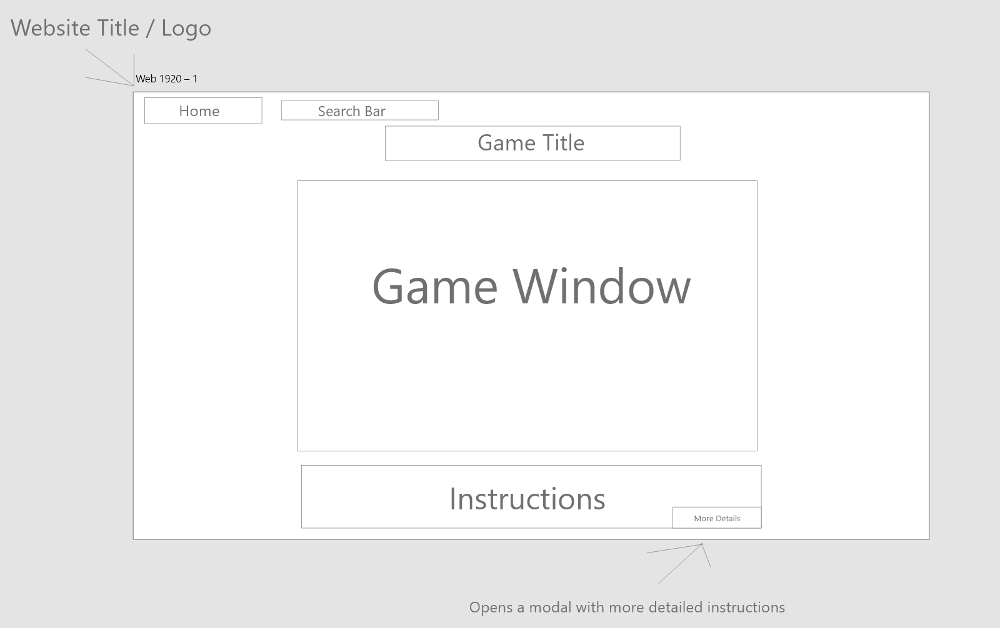
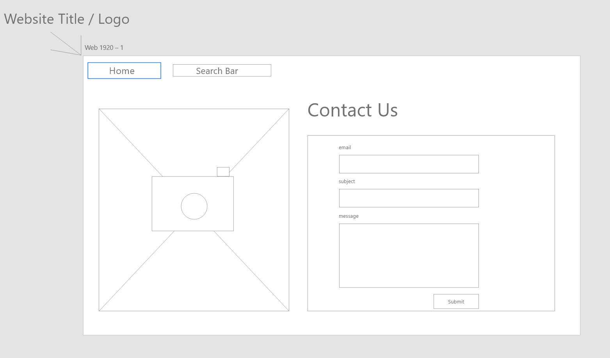

The goal of my project is to create a website that hosts several games programmed in Javascript. These games will be sourced from my Javascript assignments from this term, as well as my Javascript project, which will be one of the games. If needed to give the project an adequate scope, additional game pages may be designed for games that are not actually implemented as well. The final design will use a mixture of transforms, animations, and static backgrounds / images for the backgrounds of the various pages.
The main page will use a mixture of flexbox and grid to display thumbnails linking to the games. For the purposes of this and my Javascript project only some of the links will actually work, with the rest being for illustrative purposes as to how the page would be as an active website with more games The main page will also have a search bar, which, if feasable and within the scope of either project to do so, will be made functional, otherwise it will also be simply illustrative of how the site would look and work if it were a live and fully functional site. Each thumbnail will also have a small window appear above it when hovered over that gives a brief description of the game. Finally, there will be a footer at the bottom of the page below all of the game entries that has the site logo / title to jump back to the top of the page, as well as a link to a contact page.
The search results page, whether fully functional or a pre-populated example of how it would look, will use flexbox to display a verticle list of games, with each entry having it's thumbnail image, title, and a brief description, with each entry likely itself using flexbox to arrange the various components.
The individual game pages will of course each be focused on the game itself, and I intend to give each page a unique background design to tie into the game on that page. Each game page will also have the controls listed below the game viewport, and where needed a modal will be used to display more detailed instructions.
Finally, the contact page will be a simple contact form on the right side of the page, with some kind of design or animation on the left side to keep the page design interesting.